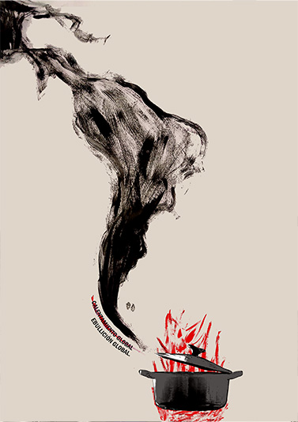

OTROS T.P
Afiche Cambio Climatico
Taller 2
Este afiche fue realizado con la consigna de abordar visualmente la temática del cambio climático. El afiche utiliza una metáfora visual para representar el cambio climático: América del Sur emerge como humo desde una olla en ebullición, transmitiendo la urgencia de una crisis ambiental extrema. Combina texturas hechas a mano con acrílicos y pincel, digitalizadas y editadas en Photoshop, junto con una imagen intervenida de una olla. El contraste entre el negro, el rojo y el fondo neutro destaca el dramatismo de la escena. La pieza busca concientizar a través de una imagen simbólica, que refleja el estado crítico del planeta.
Afiche Tipográfico
Taller 2
Este afiche tipográfico parte de una interpretación visual de la canción Casa Latina, representando su energía, ritmo y fuerza identitaria a través del trazo expresivo y gestual. Las letras fueron creadas manualmente con pincel y acrílico, luego escaneadas y tratadas digitalmente para potenciar el contraste, la textura y el impacto visual. El uso predominante del negro sobre un fondo blanco, con acentos en azul eléctrico, refuerza la idea de una identidad vibrante y poderosa, en una composición que combina lo artesanal con lo digital
Portada Revista
Computación 2
Este trabajo lo realicé como parte de un proyecto en el que teníamos que diseñar una revista homenajeando a nuestros abuelos. Elegí hacer este homenaje junto a mi abuela, con quien tengo un vínculo muy especial Diseñé todo en Adobe InDesign, desde la composición hasta la elección tipográfica y los colores. Trabajé la imagen en blanco y negro para centrar la atención en la expresión y los gestos, mientras que el uso del rojo en los textos principales busca generar impacto y contraste.